I make short films and songs in the hours outside work. I write, shoot, edit and mix them myself. These are the ones I have finished.
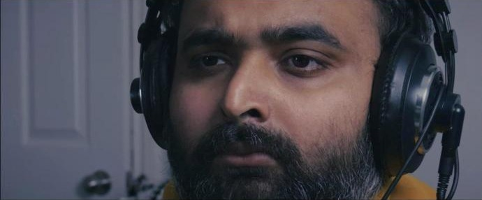
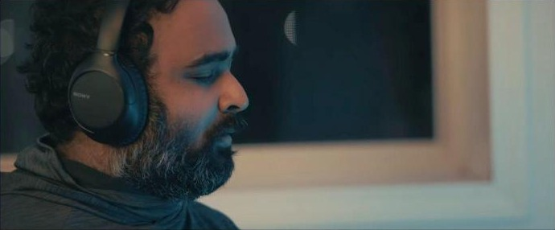
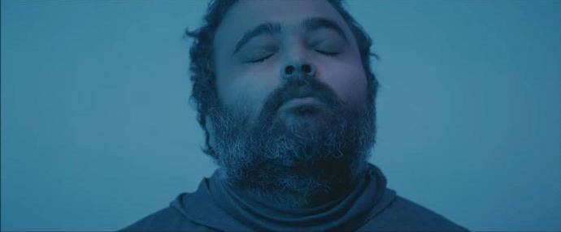
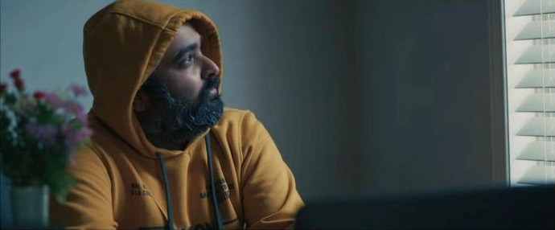
Hyperacusis is a rare hearing disorder that makes ordinary sounds unbearably loud. This film is for the people who live with it, so they know they are not alone. I shot it on a Lumix S5 II, then cut, graded and finished it in DaVinci Resolve Studio. It was my entry for the Musicbed Challenge 2024.
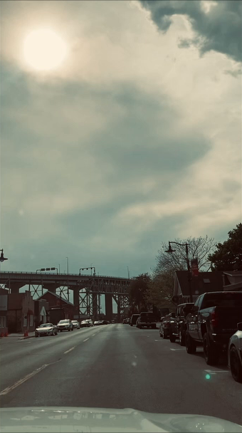
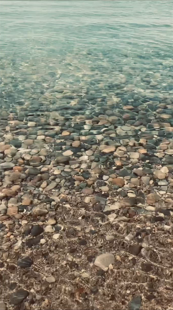
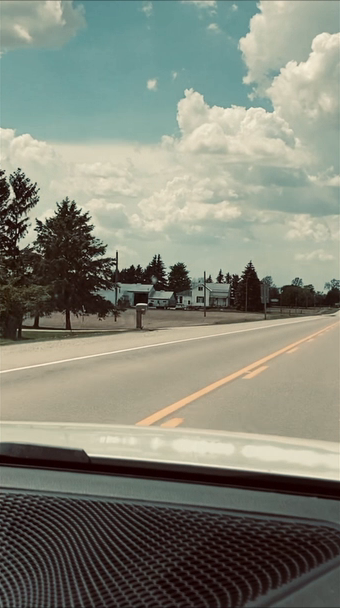
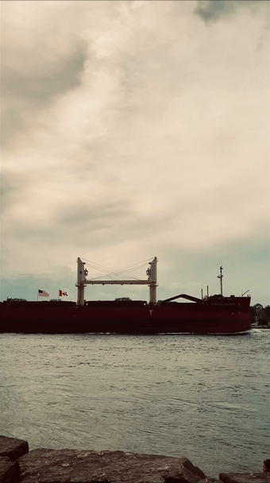
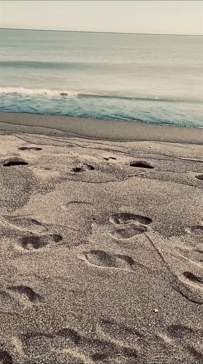
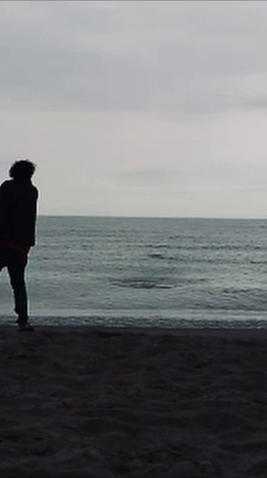
Ehsaas means feeling. It is a poem with music under it, and pictures I shot on my iPhone: the lake, the road, a ship going past. I mixed the music in GarageBand and FL Studio and cut the film in DaVinci Resolve Studio.
My first single. I wrote and composed it, then produced, mixed and mastered it in FL Studio and GarageBand. I cut the video for it too.
For a while I ran a football channel. Every short was scripted and cut by hand in CapCut. It picked up 1,750 subscribers in two months, and one video went past 257,000 views. I have stopped posting since.
Long before any of this, I ran a football page on Facebook and made every image for it in Photoshop. This one is from October 2015. I stopped posting more than eight years ago, and the page still has 29,000 followers.
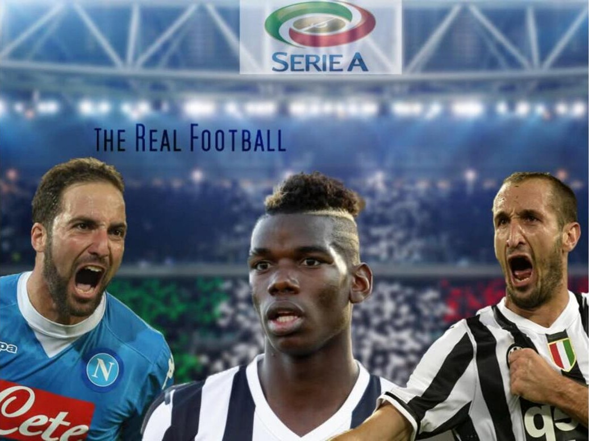
The post on FacebookA Lumix S5 II, a GoPro and my phone. DaVinci Resolve Studio for the edit and the grade, CapCut for quick cuts on the phone, FL Studio and GarageBand for music. Photoshop and Sony Vegas Pro are where I started.